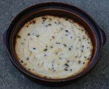

D'la Gâche dé Fronmage

L's îngrédgiens:
- chîn chents granmes dé lait cailli êputhé
- trais tchul'lées à soupe dé beurre fondu
- deux tchul'lées à soupe dé s'moule
- eune pînchie d'sé
- deux tchul'lées à soupe dé chucre
- un oeu
- d'la vanille (ou du jus d'limon)
- des raisîns
- trais tchul'lées à soupe dé crême suthe
L'èrchette:
D'battez l'lait cailli, et ajouôtez deux tchul'lées du beurre fondu, la s'moule, lé sé, lé chucre, l'oeu d'battu, et la vanille (ou l'jus d'limon). Dêmêlez tout bein, et ajouôtez les raisîns.
Vèrsez l'mêlange dans eune lachefraie beurrée et douothez auve la crême suthe. Vèrsez l'restant du beurre sus l'haut, et tchuithez au fou à 200°C pouor eune d'mié-heuthe.
Mangiz caud ou fraid.
Viyiz étout: